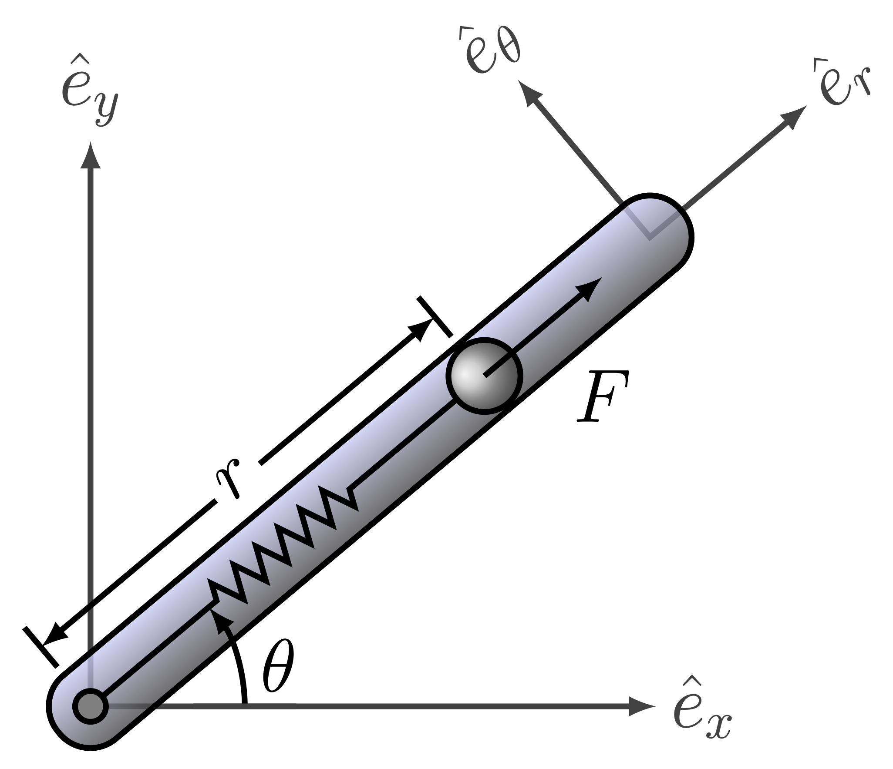

Point Mass in a Rotating Tube
Description of the problem

Consider the dynamics of a point mass in a rotating tube governed by a second order differential equation given by
\begin{align} \delta\ddot{r}(t) = \left(\dot{\theta}^2-\dfrac{k}{m}\right)\delta r(t)+u(t)+l\dot{\theta}^2(t) \end{align} where the new variable \(\delta r(t) = r(t) - l\) has been introduced, together with the definition of \(l\), as the free length of the spring (when no force is applied on it, i.e., Hooke’s Law applies as \(F_s = -k\delta r\)). The function \(u(t)\) is the radial control force applied on the point mass, and the parameters \(k\) and \(m\) are the spring stiffness and the mass of the point mass of interest. The time variation in this linear system is brought about by the profile of the angular velocity of the rotating tube \(\dot{\theta}\). Choosing the origin of the coordinate system at the position \(r_0 = l\) (with no loss of generality), the second order differential equation is given by \begin{align} \delta\ddot{r}(t) = \left(\dot{\theta}^2-\dfrac{k}{m}\right)\delta r(t)+u(t) \end{align} where the redefinition of the origin renders the system linear without any extra forcing functions. In the first order state space form (\(x_1(t) = \delta r(t), x_2(t) = \delta\dot{r}(t)\)), the equations can be written as
\begin{align} \dot{\boldsymbol{x}}(t) &= \begin{bmatrix} \dot{x}_1(t)\\ \dot{x}_2(t) \end{bmatrix} = \begin{bmatrix} 0 & 1\\ \dot{\theta}^2-\dfrac{k}{m} & 0 \end{bmatrix} \begin{bmatrix} x_1(t)\\ x_2(t) \end{bmatrix} + \begin{bmatrix} 0 \\ 1 \end{bmatrix}u(t) = A_c\boldsymbol{x}(t) + B_cu(t),\\ \boldsymbol{y}(t) &= \begin{bmatrix} 1 & 0 \\ 0 & 1 \end{bmatrix}\begin{bmatrix} x_1(t)\\ x_2(t) \end{bmatrix} = C\boldsymbol{x}(t) + Du(t),\\ \end{align}
\begin{align} A_c = \begin{bmatrix} 0 & 1\\ \dot{\theta}^2-\dfrac{k}{m} & 0 \end{bmatrix}, \quad B_c = \begin{bmatrix} 0 \\ 1 \end{bmatrix}, \quad C = \begin{bmatrix} 1 & 0 \\ 0 & 1 \end{bmatrix}, \quad D = \begin{bmatrix} 0 \\ 0 \end{bmatrix}. \end{align} Assuming that \(u(\tau)\) is constant between sample times, i.e. \(u(\tau) = u(k\Delta t)\) for \(k\Delta t\leq \tau < (k+1)\Delta t\), let’s define the discrete-time model \begin{align} \boldsymbol{x}_{k+1} &= A\boldsymbol{x}_{k} + Bu_k,\\ \boldsymbol{y}_{k} &= C\boldsymbol{x}_{k} + Du_k, \end{align} where \begin{align} A = e^{A_c\Delta t}, \quad B_c = \int_{0}^{\Delta t}e^{A_ct}\mathrm{d}tB_c. \end{align} Given a time-history of \(\boldsymbol{x}(t_k)\) and \(u(t_k)\), the objective is to find a realization \((\hat{A}, \hat{B}, \hat{C}, \hat{D})\) of the discrete-time linear model.
Code
The code below shows how to use the python systemID package to find a linear representation of the dynamics of the mass in a rotating tube.
First, import all necessary packages.
[1]:
import systemID as sysID
import numpy as np
import scipy.linalg as LA
import matplotlib.pyplot as plt
from matplotlib import rc
plt.rcParams.update({"text.usetex": True, "font.family": "sans-serif", "font.serif": ["Computer Modern Roman"]})
rc('text', usetex=True)
plt.rcParams['text.latex.preamble'] = r"\usepackage{amsmath}"
[2]:
m = 1
k = 2
theta_dot = 0.3
state_dimension = 2
input_dimension = 1
output_dimension = 2
frequency = 10
dt = 1/frequency
[3]:
Ac = np.array([[0, 1], [theta_dot**2 - k/m, 0]])
Bc = np.array([[0], [1]])
(Ad, Bd) = sysID.continuous_to_discrete_matrices(dt, Ac, Bc=Bc)
def A(tk):
return Ad
def B(tk):
return Bd
def C(tk):
return np.eye(state_dimension)
def D(tk):
return np.zeros([output_dimension, input_dimension])
x0 = np.zeros(state_dimension)
true_system = sysID.discrete_linear_model(frequency, x0, A, B=B, C=C, D=D)
[4]:
total_time_training = 5
number_steps_training = int(total_time_training * frequency + 1)
input_training = sysID.discrete_signal(frequency=frequency, data=np.random.randn(number_steps_training))
output_training = sysID.propagate(input_training, true_system)[0]
[5]:
okid_ = sysID.okid_with_observer([input_training], [output_training], observer_order=10, number_of_parameters=50)
p = 20
q = p
era_ = sysID.era(okid_.markov_parameters, state_dimension=state_dimension, p=p, q=q)
fig = plt.figure(num=1, figsize=[5, 4])
ax = fig.add_subplot(1, 1, 1)
ax.semilogy(np.linspace(1, 10, 10), np.diag(era_.Sigma)[0:10], '*', color=(253/255, 127/255, 35/255))
plt.ylabel(r'Amplitude of singular values', fontsize=12)
plt.xlabel(r'Singular value index', fontsize=12)
plt.title(r'Singular value plot from ERA', fontsize=15)
plt.xticks(fontsize=12)
plt.yticks(fontsize=12)
plt.tight_layout()
plt.show()
x0_id = np.zeros(state_dimension)
identified_system = sysID.discrete_linear_model(frequency, x0_id, era_.A, B=era_.B, C=era_.C, D=era_.D)
Error OKID = 2.2259142179618677e-15
[6]:
total_time_testing = 20
number_steps_testing = int(total_time_testing * frequency + 1)
tspan_testing = np.linspace(0, total_time_testing, number_steps_testing)
input_testing = sysID.discrete_signal(frequency=frequency, data=np.sin(3 * tspan_testing))
output_testing_true = sysID.propagate(input_testing, true_system)[0]
output_testing_identified = sysID.propagate(input_testing, identified_system)[0]
[7]:
fig = plt.figure(num=2, figsize=[7, 4])
ax = fig.add_subplot(2, 1, 1)
ax.plot(tspan_testing, output_testing_true.data[0, :], color=(11/255, 36/255, 251/255), label=r'True')
ax.plot(tspan_testing, output_testing_identified.data[0, :], '--', color=(221/255, 10/255, 22/255), label=r'Identified')
plt.ylabel(r'Range $r$', fontsize=12)
plt.title(r'Comparison True vs. Identified', fontsize=15)
ax.legend(loc='upper center', bbox_to_anchor=(1.18, 1.05), ncol=1, fontsize=12)
plt.xticks(fontsize=12)
plt.yticks(fontsize=12)
ax = fig.add_subplot(2, 1, 2)
ax.plot(tspan_testing, output_testing_true.data[1, :], color=(11/255, 36/255, 251/255))
ax.plot(tspan_testing, output_testing_identified.data[1, :], '--', color=(221/255, 10/255, 22/255))
plt.xlabel(r'Time [sec]', fontsize=12)
plt.ylabel(r'Range rate $\dot{r}$', fontsize=12)
plt.xticks(fontsize=12)
plt.yticks(fontsize=12)
plt.tight_layout()
plt.show()
fig = plt.figure(num=3, figsize=[7, 2])
ax = fig.add_subplot(1, 1, 1)
ax.plot(tspan_testing, LA.norm(output_testing_true.data - output_testing_identified.data, axis=0), color=(145/255, 145/255, 145/255), label=r'Error')
plt.ylabel(r'2-norm error', fontsize=12)
plt.xlabel(r'Time [sec]', fontsize=12)
plt.title(r'Error True vs. Identified', fontsize=15)
ax.legend(loc='upper center', bbox_to_anchor=(1.18, 1.05), ncol=1, fontsize=12)
plt.xticks(fontsize=12)
plt.yticks(fontsize=12)
plt.tight_layout()
plt.show()
[8]:
ev_true = LA.eig(A(0))[0]
ev_identified = LA.eig(era_.A(0))[0]
print('True eigenvalues:', ev_true)
print('Identified eigenvalues:', ev_identified)
fig = plt.figure(num=4, figsize=[6, 4])
ax = fig.add_subplot(1, 1, 1)
ax.plot(np.real(ev_true), np.imag(ev_true), '.', color=(11/255, 36/255, 251/255), label=r'True')
ax.plot(np.real(ev_identified), np.imag(ev_identified), 'o', mfc='none', color=(221/255, 10/255, 22/255), label=r'Identified')
plt.ylabel(r'Imaginary part', fontsize=12)
plt.xlabel(r'Real part', fontsize=12)
plt.title(r'Eigenvalues of the system matrix $A$', fontsize=15)
ax.legend(loc='upper center', bbox_to_anchor=(1.2, 1.02), ncol=1, fontsize=12)
plt.xticks(fontsize=12)
plt.yticks(fontsize=12)
plt.tight_layout()
plt.show()
True eigenvalues: [0.99046519+0.13776322j 0.99046519-0.13776322j]
Identified eigenvalues: [0.99046519+0.13776322j 0.99046519-0.13776322j]